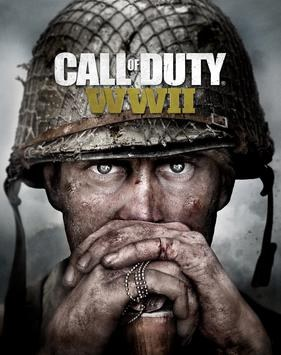
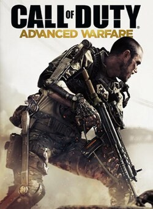
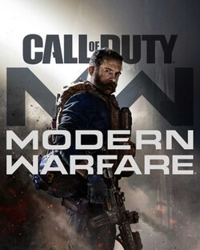
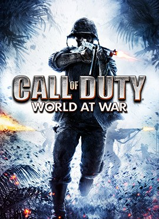
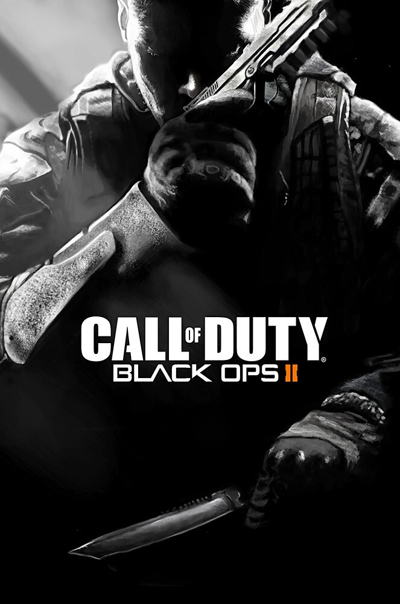
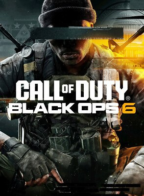
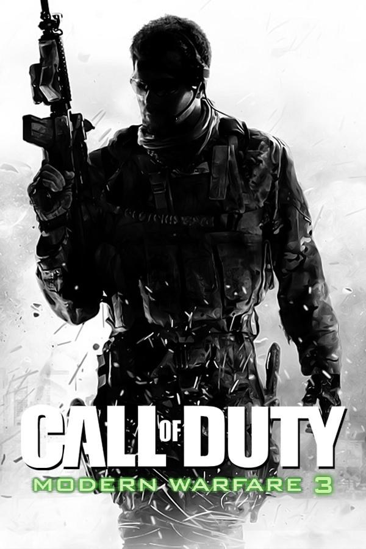
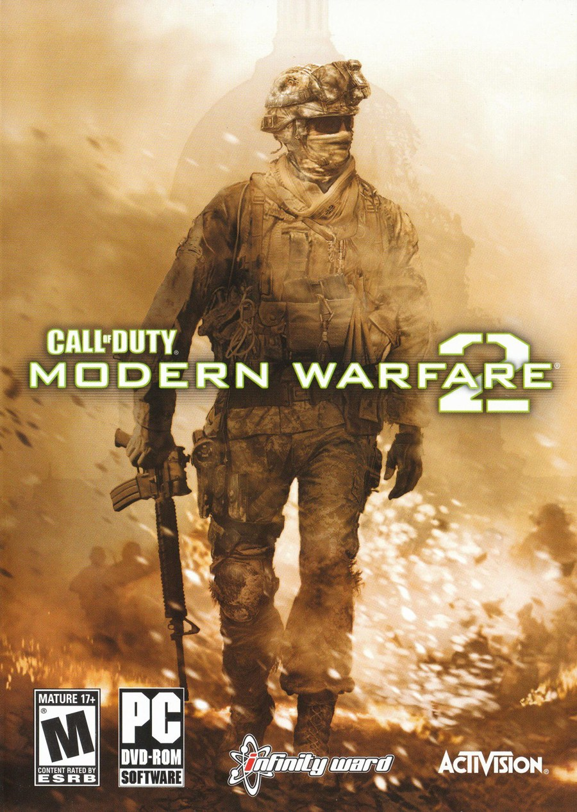
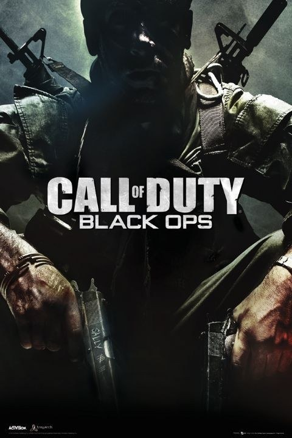
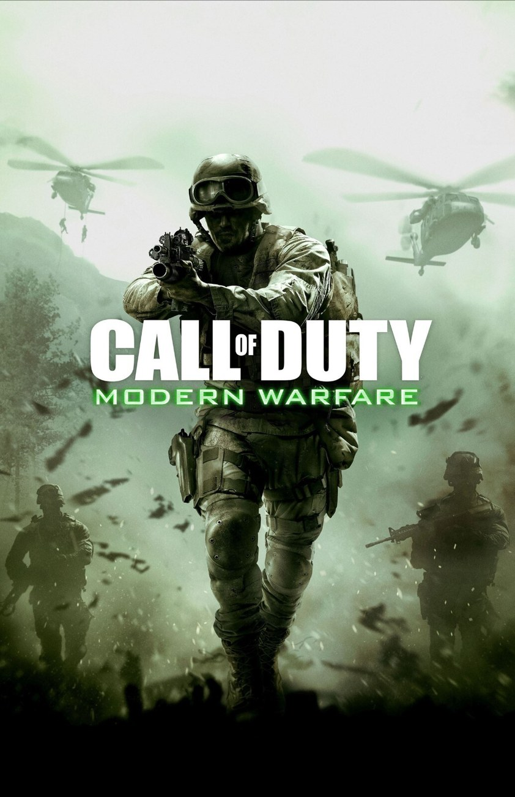

10
Call of Duty: WWII
กลับสู่สงครามโลกครั้งที่ 2 ด้วยฉากขึ้นบกที่นอร์มังดีและเรื่องราวของเพื่อนร่วมหมู่ เน้นความเป็นมนุษย์ของทหารมากกว่าฮีโร่
จัดอันดับจากเสียงตอบรับของแฟนเกม
นับถอยหลัง 10 ภาคของ Call of Duty ที่แฟนเกมจดจำและรักมากที่สุด ตั้งแต่ปี 2007 ถึง 2024 ไปจนถึงภาคที่ได้ที่ 1
เริ่มนับถอยหลัง
กลับสู่สงครามโลกครั้งที่ 2 ด้วยฉากขึ้นบกที่นอร์มังดีและเรื่องราวของเพื่อนร่วมหมู่ เน้นความเป็นมนุษย์ของทหารมากกว่าฮีโร่

โลกอนาคตกับชุด Exo-Suit ที่ให้กระโดดและพุ่งตัวในแนวตั้ง เปลี่ยนจังหวะการต่อสู้ไปจากเดิมอย่างชัดเจน

รีบูตซีรีส์ด้วยภาพสมจริงและเสียงปืนหนักแน่น พร้อมโหมด Gunfight และ Ground War

สมรภูมิแปซิฟิกและแนวรบด้านตะวันออกที่ดุดิบ และเป็นภาคที่เปิดตัวโหมด Nazi Zombies

เนื้อเรื่องแตกกิ่งตามการตัดสินใจของผู้เล่น สลับระหว่างสงครามเย็นกับอนาคต และระบบ Pick 10

ฉากหลังสงครามอ่าวต้นยุค 90 กับระบบ Omnimovement ที่ทำให้การเคลื่อนไหวลื่นไหลรอบทิศทาง

ปิดไตรภาคด้วยสเกลสงครามระดับโลก มาพร้อมโหมด Survival และมัลติเพลเยอร์ที่แฟนยังคิดถึง

แคมเปญเข้มข้น โหมด Spec Ops ที่เล่นสนุกกับเพื่อน และมัลติเพลเยอร์ระดับตำนาน

สงครามเย็น ปฏิบัติการลับ และเนื้อเรื่องหักมุม ควบคู่กับโหมด Zombies ที่ขยายฐานแฟนเกม

จุดเปลี่ยนของทั้งซีรีส์ ย้ายสงครามสู่ยุคปัจจุบัน พร้อมระบบเลเวล เพิร์ก และ Killstreak ที่เป็นมาตรฐานของเกมยิงออนไลน์
Call of Duty เป็นซีรีส์เกมยิงที่เล่นกันมายาวนานกว่า 20 ปี แต่ละภาคมีบรรยากาศ เนื้อเรื่อง และจังหวะการเล่นต่างกัน จึงเกิดคำถามคลาสสิกในหมู่แฟนเกมว่า “ภาคไหนดีที่สุด”
เว็บไซต์นี้รวบรวม 10 ภาคที่ได้รับเสียงตอบรับดีจากแฟนเกม เรียงจากอันดับ 10 ไปจนถึงอันดับ 1 การจัดอันดับเป็นมุมมองส่วนตัว ไม่ใช่คะแนนทางการ